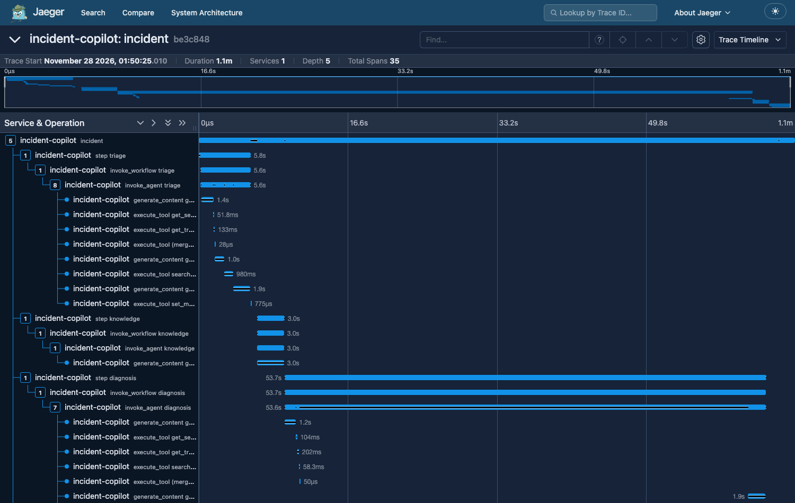

| Date | 28 November 2026 |
| Stack | Google ADK 2.15 · Gemini (2.5-flash, 3.5-flash, 3.5-flash-lite) · Postgres 17 + SQLAlchemy async (psycopg 3) · OpenTelemetry → Jaeger 2.19 · Python 3.14 |
| New code | copilot/agents/{team,coordinator,runtime,review,verify,llm}.py, copilot/actions/, copilot/state.py, copilot/postmortem.py, copilot/telemetry.py, scripts/incident.py, 4 new prompts |
| Tests | 678 passed (642 unit, 23 against the real Postgres, 13 live against the running demo) |
| Live | 9 runs on the real demo. Every completed diagnosis of the payment fault was right. One fix approved and verified resolved, one rejected, a false alarm correctly called "no incident" (twice). |
| Improved | Model calls per incident 12+ (failing) → 8, tokens −38 %, 359 s → 81 s. Reviewer loop fixed. False alarm 13 → 9 calls, tokens −49 %. Fail fast on a used-up daily quota. |
Until Week 3 one agent did everything. A real incident team splits the work: someone takes a first look, someone checks the runbooks, someone digs for the cause, a colleague double-checks the reasoning, and only then does anyone touch production, after the on-call lead says yes.
Week 4 builds exactly that team out of Gemini agents:
| File | What it does |
|---|---|
copilot/agents/team.py | The five agents, their tools and budgets, and their output schemas (TriageReport, KnowledgeReport, Review). |
copilot/agents/coordinator.py | The procedure: investigate(alert) up to the human decision, and decide(id, approve) afterwards. |
copilot/agents/runtime.py | run_step(): runs one agent and returns its transcript, model calls, tokens, parsed output and any paused approval. Also the tool guard. |
copilot/agents/review.py | The grounding check: every cited trace ID and service must exist in a real tool result. |
copilot/agents/llm.py | Gemini with automatic retries, and a pacer that keeps the team under the free tier's request limit. |
copilot/agents/verify.py | After a fix: are the error ratios back below 5 %? |
copilot/actions/remediation.py | The only code that changes anything: rollback_config, restart_service, escalate_to_human. Also the audit log and backups. |
copilot/state.py | Incident records (table incidents) and ADK sessions (schema adk), both in Postgres. |
copilot/postmortem.py, copilot/telemetry.py | The postmortem draft, built from data rather than an LLM. Tracing to the copilot's own Jaeger. |
scripts/incident.py | run · approve · reject · list · show. The detector now starts the team. |
prompts: triage.md, knowledge.md, reviewer.md, action.md, diagnosis_team.md | One job description per agent, versioned. Each changed during testing (section 11). |
| Agent | Job | Tools (budget) | Output |
|---|---|---|---|
| Triage | What is broken, how badly, where to start? | the 5 telemetry tools (4) | symptoms, suspects, search query |
| Knowledge | Have we seen this before? | none: retrieval runs in code, the agent reads the results | relevant runbook steps, similar incidents, fix hints |
| Diagnosis | Why is it broken? (ReAct) | all 7 read-only tools (10) | root cause, confidence, evidence |
| Reviewer | Is the evidence solid? | none | approve / revise + questions |
| Action | What should we do? | rollback · restart (human approval) · escalate (1) | one proposed call |
The coordinator runs them in a fixed order: triage → knowledge → diagnosis ⇄ reviewer (at most 2 rounds) → action → stop for a human.
Each agent receives the earlier agents' outputs as JSON sections in its message ("## Triage report", "## Knowledge", "## Reviewer feedback"), and each step runs in its own ADK session. No agent sees another agent's raw conversation.
Live demo, paymentFailure injected at 50 %, model gemini-3.5-flash, prompts version 2. Real console output, shortened:
ALERT: users report failures at checkout in the last few minutes. Investigate and find the root cause. [triage ] ACT get_service_health(minutes=15) [triage ] ACT get_traces(minutes=15, limit=5, errors_only=True, service='checkout') <- same turn [triage ] OBSERVE get_traces -> ok (12.0 KB) error_origins: {"payment :: charge": 5} [triage ] ACT search_logs(minutes=15, service='payment', level='warn') [triage ] OBSERVE search_logs -> ok (10.8 KB) "Payment request failed. Invalid token. ...loyalty_level=gold x25" [triage ] RESULT suspects: payment, checkout search query: checkout errors caused by payment charge failing with invalid token for gold loyalty level [knowledge] RESULT runbook: kb/runbooks/payment.md, kb/runbooks/checkout.md past: kb/postmortems/2026-03-14-payment-charges-rejected.md root cause payment hint: Roll back recent payment service deployments or configuration changes ... [diagnosis] ACT get_service_metrics(service='payment') get_traces(service='checkout') search_logs(payment, warn) [diagnosis] OBSERVE oteldemo.PaymentService/Charge: error ratio 66.7% ... error_origins {"payment :: charge": 10} [diagnosis] RESULT root cause: payment (errors, confidence high) - [metric] payment operation oteldemo.PaymentService/Charge error ratio 66.7% now (max 100%) - [trace] Trace 5ab0267047b569909710af9616cdc86b error origin payment :: charge ... - [log] 23 log records in payment matching 'Payment request failed. Invalid token. ...' [reviewer ] RESULT verdict: approve (grounding: 6/6 checks passed, evidence anchored 3/3) [action ] APPROVAL NEEDED rollback_config(service='payment', reason='The payment service is failing charge requests for gold loyalty level users with invalid token errors (66.7% error ratio) ...') status: AWAITING_APPROVAL effort: 8 LLM calls, 7 tool calls, 60,848 tokens, 81 s Nothing has been changed.
Then, in a separate command (a new process):
$ scripts/incident.py approve inc-20261127-374fea --by hamza --verify-minutes 8 [action ] OBSERVE rollback_config -> ok status: RESOLVED result: The configuration of payment was rolled back to its last known good version. verified: Error ratio below 5% for checkout, frontend, frontend-proxy, payment in 2 polls in a row. postmortem: runs/postmortems/2026-11-27-inc-20261127-374fea.md (draft)
| Time (UTC) | Event |
|---|---|
| 20:10:58 | alert |
| 20:11:23 | triage: suspects payment, checkout |
| 20:11:35 | knowledge: 2 runbooks, 1 past incident (of 3 + 2 retrieved) |
| 20:12:09 | diagnosis: payment (errors, high), 71 s after the alert |
| 20:12:14 | review: approve |
| 20:12:21 | proposal rollback_config(service='payment') waits for approval |
| 20:12:47 | approved by hamza. Rollback applied. |
| 20:14:47 | verified: errors below 5 % (resolved), postmortem draft written |
loyalty_level=gold fail, with "Invalid token". The knowledge agent kept only the payment and checkout runbooks and the payment postmortem, ignored the cart documents that were also retrieved, and explained how the past incident differs (card rejections then, invalid tokens now).rollback_config(service="payment", reason=...). The tool is registered with FunctionTool(..., require_confirmation=True).adk_request_confirmation event and pauses the run. The coordinator stores the paused call in the incident record and sets the status to awaiting_approval.decide(), in any process and at any time later, loads the record and sends ADK a message answering that confirmation: {"confirmed": true, "payload": {"by": "hamza", ...}}, in the same ADK session, which ADK reloads from Postgres.rollback_config refuses to run unless its context carries a confirmed approval, so calling it directly from code cannot skip the human either.Other rules on the write path:
runs/actions/audit.jsonl (who approved, when, what, result), and the settings file is backed up first.An LLM reviewer can judge reasoning, but it cannot see whether a trace ID is real. So code checks the facts first, against the full tool results of the investigation:
| Check | Hard? | Fails when |
|---|---|---|
| consistency | yes | incident=true with root cause "none", or the reverse |
| trace_ids_exist | yes | a cited 32-hex trace ID that no tool returned (an invented ID) |
| root_cause_seen | yes | a root-cause service that no tool result mentions |
| evidence_count, confidence_vs_kinds, evidence_anchored | no | too little evidence; "high" without metric, trace and log; evidence with nothing found in the results |
A hard failure forces "revise", whatever the Reviewer says (tested with an invented trace ID). After two rounds without approval the incident goes to a human and the Action agent is never called. In run 4 below that rule held on a real run.
incidents: status, alert, root cause, and the full record as JSON (timeline, every agent output, reviews, proposal, decision, result, verification, per-step tokens and timing). The record is saved after every step, so a crash still leaves what was done.DatabaseSessionService in its own schema adk, using SQLAlchemy with psycopg 3 in async mode. One session per step (…-triage, …-diagnosis-1, …-action). This is what lets a different process resume the paused action.Exactly-once approval: the decision is a compare-and-set, UPDATE … WHERE status = 'awaiting_approval'. Two people approving at the same moment: exactly one wins (tested with two threads against the real Postgres). Statuses: investigating → awaiting_approval → approved / rejected → fix_applied → resolved. Other endings: no_incident, needs_human, failed.

incident → step triage / knowledge / diagnosis / ... → ADK's agent, LLM (generate_content) and tool (execute_tool) spans. The long gap inside the diagnosis step is the pacer waiting for the free-tier rate limit (section 11).incident-copilot. The code also refuses the collector's ports.| Run | Version · model | Outcome | Model calls | Tokens | Agent time |
|---|---|---|---|---|---|
| 1 | v1 · 2.5-flash | failed: 429, 5 requests per minute, in the diagnosis step after 30 s | not counted yet | 36k | 31 s |
| 2 | v1 + pacing · 2.5-flash | diagnosis correct, review approved; failed at action: 429, 20 requests per day | 12 | 99k | 359 s |
| 3 | v2 · 3.5-flash | correct, approved in round 1, rollback approved by a human, resolved (verified 2 min later) | 8 | 61k | 81 s |
| 4 | v2 · 3.5-flash-lite | diagnosis correct, but review not approved in 2 rounds → needs_human, no action | 11 | 75k | 123 s |
| 5 | v3 · 3.5-flash-lite | correct, approved in round 1, proposal rejected by a human, nothing changed | 8 | 57k | 66 s |
| 6 | v3 · 3.5-flash (= 3.6-flash) | false alarm on a healthy system (alert: fraud-detection 25 %): no_incident, high confidence, no action | 13 | 117k | 182 s |
| 7, 8 | v3 + fix · 3.5 / 3.6-flash | daily quota used up; run 8 stopped after one step (fix 5) | 0 | 0 | 222 / 75 s |
| 9 | v3 + fix · 3.7-flash | same false alarm: no_incident, high confidence, no action | 9 | 60k | 718 s* |
* Run 9's 12 minutes came from the model itself (one 1-call step took 262 s, with no time in the pacer). Model calls and tokens are the comparable numbers.
The free tier allows 5 requests per minute and 20 per day for each model. A five-agent incident needs one request per model turn, so run 1 died after 30 seconds and run 2 used up the whole day's quota.
COPILOT_LLM_RPM=5, an ADK before_model_callback on every agent) waits before a request instead of failing after it. Waiting time is recorded per step, so it is never mistaken for slowness.retry_options (429/5xx, 10–60 s back-off) for what pacing does not prevent.gemini-3.5-flash and -flash-lite. gemini-2.5-flash-lite is no longer available to new users.--debug to see them); the record keeps the error.Under a 20-a-day quota, model calls are the cost that matters. Run 2's transcript showed the waste:
| Waste seen | Change | Before → after |
|---|---|---|
Knowledge: one turn to call two searches, one turn for the JSON, and one malformed call to a tool that does not exist (SetModelResponseRunbooks) | Retrieval moved into code using the triage query; the agent has no tools and answers in one call (classic RAG: retrieve in code, reason in the LLM) | 3 calls, 197 s → 1 call, 11 s |
| Diagnosis repeated triage's first two calls exactly | Prompt: start from the suspects, do not repeat triage's calls, batch independent calls in one turn; budget 15 → 10 | 5 calls, 66k tokens → 2 calls, 26k |
| Triage used one turn per tool | Prompt: overview and the named service's traces in the same turn; budget 6 → 4 | 3 tools in 2 turns |
| After an approved action, ADK asks the model to summarise the result | skip_summarization: the tool result is the answer | approval: 0 calls |
Result: a whole incident in 8 model calls (run 2 needed 12 just to reach the action step), 61k tokens instead of 99k (−38 %), 81 s instead of 359 s. The model differs between the runs: the call count comes from the structure and budgets, while tokens and quality also depend on the model.
Run 4 (flash-lite): the diagnosis was right, but the reviewer rejected it twice. Round 1 had high confidence with only metric and log evidence. Asked for traces, round 2 replaced the logs with traces, so it still had only two kinds. The reviewer was right by the rules, and the safety rule held: no action.
Result (run 5, same model, same fault): approved in round 1; 8 calls instead of 11, 57k tokens instead of 75k.
Run 6 (false alarm) cost 13 calls and 117k tokens. Triage asked for 6 tools (its budget refused 2), and diagnosis used all 10, checking payment, checkout and 30-minute windows to show a negative.
Result (run 9, same alert): still "no incident" with the right reason; 9 calls instead of 13, 11 tools instead of 16, 60k tokens instead of 117k (−49 %). The model differs (3.7-flash), forced by the daily quotas.
After a daily 429 the coordinator kept going, and each step sat through the client's retries before failing (222 s for nothing). A step error naming a "PerDay" quota now stops the investigation at once, with a clear message to switch model or wait. Run 8 stopped after one step (75 s), and a unit test checks that no later agent is called.
before_tool_callback again when an approved call resumes. Found by reading ADK 2.15's source before the first run. The guard now counts by function-call ID.{"error": "This tool call is rejected."}: the error is a plain string, while our tools use a dict. That would have crashed the reject path, and it was found while re-reading the code. One shared helper now reads both shapes.verify_recovery(health=get_service_health) bound the function when the module loaded, so tests could not replace it. Now it is looked up at call time.SetModelResponseRunbooks, a tool that does not exist. The guard refused it, and removing the knowledge agent's tools removed the problem.gemini-3.5-flash came back with 429s naming gemini-3.6-flash. On this key the first name is served by the second, so they share one daily quota. Read the quota error, not the model name you asked for.| Suite | Count | What it proves |
|---|---|---|
| Unit (no network, no Gemini, no database) | 642 | Scripted models drive the real ADK loop: tools per agent, guard, pause/resume, approve and reject, review loop, forced revision on an invented trace ID, every ending, exactly-once decisions, resume by a new coordinator, verification, the remediation lock, no leaks. |
db (real Postgres, private schema) | 23 | Records, the approval race between two threads, and a paused action resumed through a fresh Postgres session service. |
live (running demo) | 13 | Every telemetry tool against the real backends, with no flag leaks. |
All 675 passed on the first run. The unit and database suites were run again after every change in section 11, and the final suite (678 with the 3 new tests) passed in full, including the live tests. Tests can never touch the real demo: in tests the settings path points at a missing file and the docker call is blocked.
docker compose up -d kb-postgres copilot-jaeger
scripts/start_demo.sh # the shop + its telemetry
export COPILOT_LLM_RPM=5 # Gemini free tier: 5 requests/minute
.venv/bin/python scripts/incident.py run # -> AWAITING_APPROVAL + the approve command
.venv/bin/python scripts/incident.py approve <id> --verify-minutes 8
.venv/bin/python scripts/incident.py reject <id> --note "why"
.venv/bin/python scripts/incident.py list | show <id> # Jaeger: http://localhost:16687require_confirmation=True. ADK pauses with a confirmation request, we store the paused call in Postgres, and any process can later answer it in the same ADK session. ADK then runs the tool. The tool also refuses to run without a confirmed approval, and approvals are compare-and-set, so they apply exactly once.The evaluation suite: inject each fault type several times, score root-cause accuracy, time to diagnosis, evidence-grounded rate and cost, and compare against baselines and ablations (single agent vs. team, with vs. without RAG).